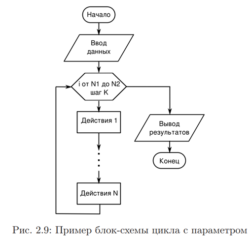
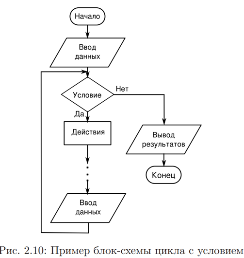
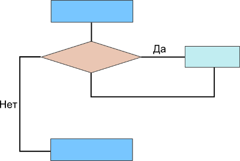
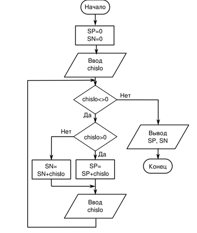
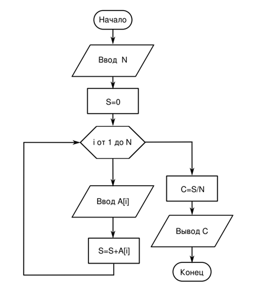

Циклом называется фрагмент алгоритма или программы, который может повторяться несколько раз (в том числе и нуль раз). Каждая циклическая конструкция начинается заголовком цикла и заканчивается конечным оператором. Между ними располагаются операторы, называемые «телом цикла». Количество повторений выполнения команд (операторов), составляющих тело цикла, определяется условием окончания цикла. Условием окончания может быть достижение некоторого значения специальной переменной, называемой параметром цикла (переменной цикла), или выполнение (прекращение выполнения) некоторого условия.
Для организации циклов с параметром в языках программирования используется составной оператор FOR («для»), а в циклах с условием чаще всего используется составной оператор WHILE («пока»).В случае цикла с параметром количество повторений («оборотов») цикла известно заранее и задаётся специальным выражением в заголовке цикла, а в случае цикла с условием при каждом следующем повторении требуется проверять условие прекращения цикла.
! Если при написании операторов в теле цикла допущена ошибка, условие прекращения цикла может не выполниться никогда и цикл окажется бесконечным («программа зациклится»).
Пример блок-схемы цикла с параметром (переменной) показан на рис. 2.9, а пример блок-схемы цикла с условием окончания — на рис. 2.10.
Для обозначения заголовка цикла с параметром используется специальный графический элемент — блок модификации, в котором указывается правило изменения параметра цикла. Для работы с одномерными массивами целесообразно использовать циклы с параметром, поскольку до начала цикла может быть определено количество повторений. В этом случае цикл с параметром требуется для ввода элементов массива, а для выполнения каких-либо действий с этими элементами и вывода результатов также могут потребоваться циклы.
В блок-схеме на рис. 2.10 действия повторяются, пока выполняется некоторое условие. Когда условие перестаёт выполняться, цикл завершается. Такие циклы целесообразно использовать в ситуации, когда данные вводятся (поступают из какого-то источника), пока не произойдёт некоторое событие. При этом всю обработку чаще всего приходится выполнять «на лету», не создавая массив, поскольку количество элементов заранее неизвестно.
Цикл for
Циклы позволяют выполнить одни и те же инструкции многократно. Цикл for в Python не является циклом со счетчиком! Цикл for применяется для перебора элементов последовательности и имеет такой формат:
for <текущий элемент> in <последовательность>:
<инструкции внутри цикла>
[else:
<блок, выполняемый, если не использовался оператор break>
]
Здесь присутствуют следующие конструкции:
− <последовательность> - объект, поддерживающий механизм итерации: строка, список, кортеж, диапазон, словарь и др.;
− <текущий элемент> - на каждой итерации через эту переменную доступен очередной элемент последовательности или ключ словаря;
− <инструкции внутри цикла> - блок, который будет многократно выполняться;
− если внутри цикла не использовался оператор break, то после завершения выполнения цикла будет выполнен блок в инструкции else. Этот блок не является обязательным.

ЗАДАЧА 1. Написать программу, выполняющую перебор букв в слове.
РЕШЕНИЕ:
for s in ‘str’:
print (s, end = ‘ ‘)
else:
print(‘\nЦикл выполнен’)
Получим следующий результат:
s t r
Цикл выполнен
ЗАДАЧА 2. Написать программу, выполняющую перебор списка и кортежа.
РЕШЕНИЕ:
for x in [1, 2, 3]:
print (x)
for y in (4, 5, 6):
print (y)
Получим следующий результат:
1
2
3
4
5
6
Цикл for позволяет также перебрать элементы словарей, хотя словари и не являются последовательностями.
ЗАДАЧА 3. Написать программу, выполняющую вывод элементов словаря.
РЕШЕНИЕ: мы просто указываем словарь в качестве параметра – на каждой итерации цикла будет возвращаться ключ, с помощью которого внутри цикла можно получить значение, соответствующее этому ключу:
arr = {'x':1, 'y':2, 'z':3}
for key in arr:
print(key, arr[key])
Получим следующий результат:
x 1
y 2
z 3
Обратите внимание на то, что элементы словаря могут быть выведены в произвольном порядке. Чтобы вывести элементы словаря в алфавитном порядке, следует отсортировать ключи с помощью функции sorted().
arr = {'x':1, 'y':2, 'z':3}
for key in sorted(arr):
print(key, arr[key])
Функции range() и enumerate()
ЗАДАЧА 4. Умножить каждый элемент списка на 2.
РЕШЕНИЕ:
arr = [1, 2, 3]
for i in arr:
i = i*2
print(arr)
Получим следующий результат:
[1, 2, 3]
Список не изменился! Переменная i на каждой итерации цикла содержит лишь копию! значения текущего элемента списка. Поэтому изменить таким образом элементы списка нельзя. Чтобы получить доступ к каждому элементу списка, можно воспользоваться функцией range([<начало>, ] <конец>[, <шаг>])
Если параметр <начало> не указан, то по умолчанию берется значение 0. Параметр <конец> задает конечное значение и не входит в возвращаемые значения. Параметр <шаг> по умолчанию равен 1. Функция возвращает диапазон – особый объект, поддерживающий итерационный протокол. С помощью диапазона внутри цикла for можно получить значение текущего элемента. Еще раз попробуем решить эту задачу с помощью диапазона.
arr = [1, 2, 3]
for i in range (len(arr)):
arr[i] *= 2
print(arr)
Получим следующий результат:
[2, 4, 6]
С помощью функции len() мы получили количество элементов списка. Функция range() вернула значения от 0 до len(arr)-1. на каждой итерации цикла через переменную i доступен текущий элемент из диапазона индексов.
ЗАДАЧА 5. Вывести числа от 1 до 100.
РЕШЕНИЕ:
for i in range (1, 101): print (i)
Можно не только увеличивать значение, но и уменьшать его.
Выведем все числа от 100 до 1.
for i in range (100, 0, -1): print (i)
Выведем все четные числа от 1 до 100.
for i in range (2, 101, 2): print (i)
Диапазон поддерживает два полезных метода:
1) index(<значение>) – возвращает индекс элемента, имеющего указанное значение. Если значение не входит в диапазон, возбуждается исключение ValueError:
x = range(1,5)
print(x.index(1), x.index(4))
Получим следующий результат: (0,3)
2) count(<значение>) – возвращает количество элементов с указанным значением, если элемент не входит в диапазон, возвращается значение 0:
x = range(1,5)
print(x.count (1), x.count (10))
Получим следующий результат: (1, 0)
Функция enumerate(<объект>[, start = 0]) на каждой итерации цикла for возвращает кортеж из индекса и значения текущего элемента. С помощью необязательного параметра start можно задать начальное значение индекса.
ЗАДАЧА 6. Умножить на 2 каждый элемент списка, который содержит четное число.
РЕШЕНИЕ:
arr = [1, 2, 3, 4, 5, 6]
for i, elem in enumerate (arr):
if elem % 2 == 0:
arr[i] *= 2
print(arr)
Получим следующий результат:
[1, 4, 3, 8, 5, 12]
Функция enumerate() не создает список, а возвращает итератор. С помощью функции next() можно обойти всю последовательность. Когда перебор будет закончен, получим исключение StopIteration.
arr = [1, 2]
obj = enumerate(arr, start = 2)
print(next(obj), next(obj))
Получим (2,1) (3,2)
Цикл while
Самое главное для цикла while – чтобы в его теле происходили изменения значений переменных, которые проверяются в его заголовке, и чтобы хоть когда-нибудь наступил случай, когда логическое выражение в заголовке возвращает False. Иначе произойдет зацикливание. Выполнение инструкций в цикле while происходит до тех пор, пока логическое выражение истинно. Формат цикла:
while <условие>:
<инструкции>
<приращение значений в переменной счетчике>
[else:
<блок, выполняемый, если не использовался оператор break>
]
Последовательность работы цикла while:
1. Переменной-счетчику присваивается начальное значение.
2. Повторяется условие и если оно истинно, то выполняются инструкции внутри цикла, иначе выполнение цикла завершается.
3. Переменная-счетчик изменяется на величину, указанную в параметре <приращение>.
4. Переход к пункту 2.
5. Если внутри цикла не использовался оператор break, то после завершения выполнения цикла будет выполнен блок в инструкции else. Этот блок не является обязательным.
Рассмотрите блок-схему цикла while.


На ней ярко-голубыми прямоугольниками обозначена основная ветка программы, ромбом – заголовок цикла с логическим выражением, бирюзовым прямоугольником – тело цикла.
С циклом while возможны две исключительные ситуации:
a) Если при первом заходе в цикл логическое выражение возвращает False, то тело цикла не выполняется ни разу. Эту ситуацию можно считать нормальной, так как при определенных условиях логика программы может предполагать отсутствие необходимости в выполнении выражений тела цикла.
b) Если логическое выражение в заголовке while никогда не возвращает False, а всегда остается равным True, то цикл никогда не завершится, если только в его теле нет оператора принудительного выхода из цикла break или вызовов функций выхода из программы – quit(), exit().
ЗАДАЧА 7. Вывести все числа от 1 до 100, используя цикл while.
РЕШЕНИЕ:
i = 1 #начальное значение
while i < 101: # условие
print (i) # инструкции
i +=1 # приращение
Чтобы вывести все числа от 100 до 1, необходимо задать начальное значение 100, а приращение i -= 1.
i = 100 #начальное значение
while i: # условие
print (i) # инструкции
i -=1 # приращение
В этом случае условие не содержит операторов сравнения. Как только значение переменной счетчика будет равно 0, цикл остановится, т.к. в логическом контексте число 0 эквивалентно значению False.
ВНИМАНИЕ! Если приращение не указать, цикл будет выполняться бесконечно, прервать с помощью комбинации клавиш <Ctrl+C> можно только цикл, выводящий данные.
С помощью цикла while можно перебирать и элементы различных структур, нужно помнить, что в этом случае цикл while работает медленнее цикла for.
ЗАДАЧА 8. Умножить каждый элемент списка на 2.
РЕШЕНИЕ:
arr = [1, 2, 3]
i, count = 0, len(arr)
while i < count:
arr[i] *= 2
i +=1
print(arr)
Получим следующий результат:
[2, 4, 6]
Оператор continue: переход на следующую итерацию цикла
Оператор continue позволяет перейти к следующей итерации цикла до завершения выполнения всех инструкций внутри цикла.
ЗАДАЧА 9. Вывести все числа от 1 до 100, кроме чисел от 5 до 10 включительно.
РЕШЕНИЕ:
for i in range(1, 101):
if 4 < i <11:
continue
print (i)
Оператор break: прерывание цикла
Оператор break позволяет прервать выполнение цикла досрочно.
ЗАДАЧА 10. Вывести все числа от 1 до 100.
РЕШЕНИЕ:
i = 1
while True:
if i >100:
break #прерываем цикл
print(i)
i +=1
Если убрать оператор break, цикл будет выполняться бесконечно.
ЗАДАЧА 11. Найти сумму не определенного заранее количества чисел.
РЕШЕНИЕ:
print(‘введите слово stop для получения результата’)
summa = 0
while True:
x = input(‘введите число: ‘)
if x == ‘stop’:
break #прерываем цикл
x = int(x)
summa = +=x
print(‘сумма чисел = ‘, summa)
ЗАДАЧА 12. Вывести число, обратное введенному по порядку составляющих его цифр. Например, введено 20754, надо вывести 45702.
РЕШЕНИЕ: Алгоритм:
1. Найдем остаток от деления на 10 исходного числа. Тем самым получим последнюю его цифру.
2. Добавим эту цифру к новому числу.
3. Разделим нацело на 10 исходное число. Тем самым избавимся от последней цифры в нем.
4. Снова найдем остаток от деления на 10 того, что осталось от первого числа. Запомним эту цифру.
5. Умножим на 10 второе число. Тем самым увеличим его разрядность до двух и сдвинем первую цифру в разряд десятков.
6. Добавим к полученному второму числу запомненную ранее цифру из первого числа.
7. Будем повторять действия п. 3-6 пока исходное число не уменьшится до нуля, т. е. пока не избавимся от всех его разрядов.
n1 = int(input("Введите целое число: "))
n2 = 0
while n1 > 0:
# находим остаток - последнюю цифру
digit = n1 % 10
# делим нацело - удаляем последнюю цифру
n1 = n1 // 10
# увеличиваем разрядность второго числа
n2 = n2 * 10
# добавляем очередную цифру
n2 = n2 + digit
print('"Обратное" ему число:', n2)
ЗАДАЧА 13. Определить, сколько в числе четных цифр, а сколько нечетных. Число вводится с клавиатуры.
РЕШЕНИЕ: Если число делится без остатка на 2, его последняя цифра четная. Увеличиваем на 1 счетчик четных цифр chet. Иначе последняя цифра числа нечетная, увеличиваем счетчик нечетных цифр nechet.
В Python операцию нахождения остатка от деления выполняет знак %.
Чтобы избавиться от младшего уже учтенного разряда, число следует разделить нацело на 10. Деление нацело обозначается двумя слэшами //.
a = input()
a = int(a)
chet = 0
nechet = 0
while a > 0:
if a % 2 == 0:
chet += 1
else:
nechet += 1
a = a // 10
print("chet: %d, nechet: %d" % (chet, nechet))
ЗАДАЧА 14. Последовательно вводятся
ненулевые числа. Определить сумму
положительных и сумму отрицательных чисел. Закончить ввод чисел при вводе
0.
РЕШЕНИЕ:
# -*- coding: utf-8 -*-
SP=0
SN=0
c h i s l o = i n p u t ( ’Следующее␣число : ␣ ’ )
while c h i s l o != 0 :
i f c h i s l o > 0 :
SP=SP+c h i s l o
e l s e :
SN=SN+c h i s l o
c h i s l o = i n p u t ( ’Следующее␣число : ␣ ’ )
p r i n t (’Сумма␣положительных : ’ ,SP)
p r i n t (’Сумма␣отрицательных : ’ ,SN)

Рис. - Блок-схема алгоритма обработки последовательности

Рис. - Блок-схема алгоритма вычисления среднего значения в массиве